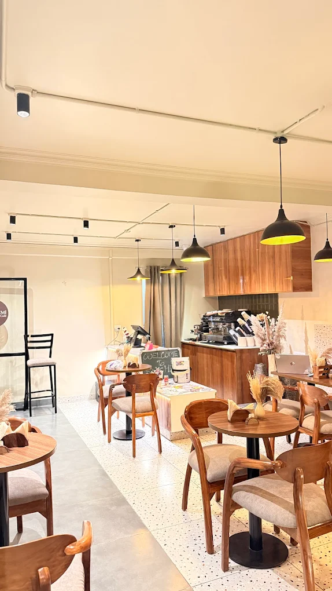
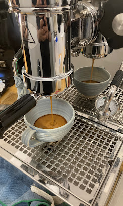
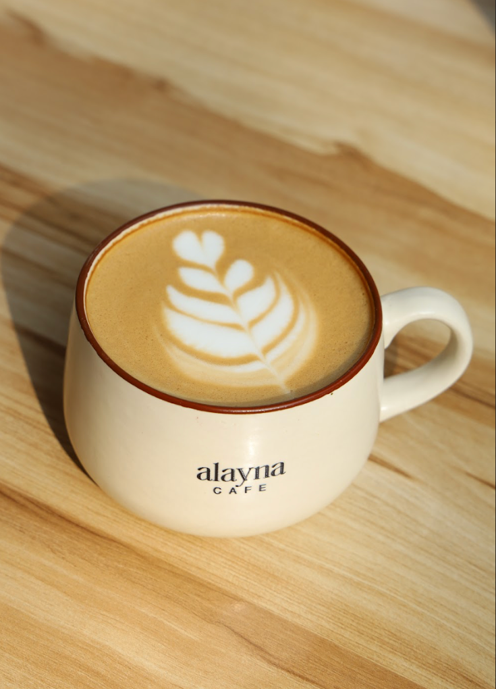

Cafes in Shahpur Jat — Full List

Specialty coffee, fresh food — Tortizzas, pasta, cloud eggs — a reading & painting corner open to all, and a calm space that works equally well for catching up with friends or getting work done.

The specialty coffee destination in Shahpur Jat. In-house Siri Blend espresso roasted by owner Abhishek Rai, Cinnamon Sugar Toast, the Spronade (espresso tonic) and a strong community vibe. Go for the coffee.

A small, aesthetic coffee stop on the first floor — good for a quick break while exploring Shahpur Jat. Coffee-focused menu, compact space. Easy to walk past; look for the staircase at number 39.

Casual two-floor cafe — downstairs is social, upstairs is genuinely quiet. Good cappuccino, Vietnamese cold coffee and card games on the tables. Affordable (₹650 for two). Good for a short solo session.

One of the few cafes in Shahpur Jat with open-air seating. A boutique space with a strong identity and curated menu — suits a slow afternoon more than a quick coffee stop.

A work cafe blending cafe culture with a creative workspace feel. Good for freelancers, brainstorming and collaborative sessions. More energetic than Solchemi — suits those who like working around other people.

A clean, modern cafe with a full food menu — good for a proper meal while exploring the market. More dining-focused than other cafes in Shahpur Jat. Social and lively, not suited for quiet work.

Sits right inside the Shahpur Jat market lane — the easiest cafe to drop into while exploring boutiques and studios. Lively and social, good for a quick break. Not suited for quiet work sessions.